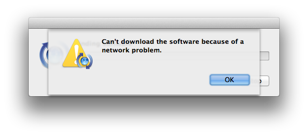

Installing Nokogiri
- Install with included libraries (RECOMMENDED)
- Install with system libraries
- Install with custom / non-standard libraries
Installing Nokogiri
Nokogiri includes its own updated and patched copies of libxml2 and libxslt libraries. By default, installation of Nokogiri will use these copies. Alternatively, you may install using your operating system’s built-in libraries or other custom versions of these libraries.
This document also helps with common problems we’ve heard. If you have an issue not discussed here, please open an issue.
For earlier versions of Nokogiri, find instructions in the git history for this document.
For other platforms, please send pull requests to sparklemotion/nokogiri.org-tutorials.
Install with included libraries (RECOMMENDED)
Ubuntu / Debian
Install Nokogiri on a brand new Ubuntu system with these commands:
1 2 | |
Note for RVM users: you may require libgmp, consider running sudo apt-get install libgmp-dev.
FreeBSD / OpenBSD >= 6.2
Install Nokogiri on a brand new FreeBSD system with these commands:
1
| |
OpenBSD < 6.2
Use gcc from ports in order to compile the included libraries:
1 2 | |
Windows
Use Rubyinstaller to install our binary distribution in a flash!
1
| |
Or build using DevKit. This is an advanced option you should only try if you know what you’re doing. You MUST use Rubygems 2.4.5 or later.
Also see more details on this advanced procedure on this nokogiri-talk thread.
Red Hat / CentOS
Install Nokogiri on a brand new Red Had / CentOS system with these commands:
1 2 3 | |
Alternatively, you may install the appropriate epel-release and get the Nokogiri package from EPEL using:
1
| |
GNU Guix
Install on any Linux distribution using GNU Guix, a reproducible binary software package management and distribution system.
Use this command:
1
| |
Note: source code is available here. A short description of how Nokogiri was packaged can be found here.
macOS
First, make sure you have the latest version of RubyGems and xcode commandline tools:
1 2 | |
Then install nokogiri:
1
| |
This is verified working on maxOS 10.9 w/ Xcode’s clang compiler. (Many thanks to @allaire and others for helping!)
xcode-select errors with a ‘network problem’
If, you see this dialog when you run the above commands:

Then run this command to turn off forced-authentication with Apple Software Update:
1
| |
Error Message About Undeclared Identifier LZMA_OK
A more recent error mentions an undeclared identifier LZMA_OK:
1 2 3 4 | |
The solution for this is a little more subtle and can be fixed in a couple of ways.
When using Homebrew, there are several libraries that use a formula called
xz(includingthe_silver_searcherandimagemagick), which by default install a version ofliblzmathat is incompatible with most Ruby builds. (Homebrew installs only the 64-bit version of the library, but most Ruby builds are universal.) This can be fixed in a couple of ways:The most reliable way appears to be temporarily unlinking
xzand relinking it during an install ofnokogiri:brew unlink xz gem install nokogiri # or bundle install brew link xzThe third way is to use a Homebrew-installed
libxml2, as suggested in using your system libraries.brew install libxml2 # If installing directly gem install nokogiri -- --use-system-libraries \ --with-xml2-include=$(brew --prefix libxml2)/include/libxml2 # If using Bundle bundle config build.nokogiri --use-system-libraries \ --with-xml2-include=$(brew --prefix libxml2)/include/libxml2 bundle installWhen working with this, be certain to use
$(brew --prefix libxml2)because it will use the correct location for your Homebrew install.
Other macOS Tips
- Make sure ruby is compiled with the latest clang compiler.
- Binary gems and ruby should be compiled with the same compiler/environment.
- If you have multiple versions of Xcode installed, make sure you use the
right
xcode-select. - Try installing with system libraries.
If reporting an issue about the macOS installation instructions, please mention @zenspider.
Install with system libraries
Nokogiri will refuse to build against certain versions of libxml2, libxslt
supplied with your operating system, and certain versions will cause mysterious
problems. The compile scripts will warn you if you try to do this.
Step 1: Install pkg-config
On Debian/Ubuntu:
1
| |
On FreeBSD:
1
| |
Step 2: Build Nokogiri
Using gem:
1
| |
Or, use Bundler:
1 2 | |
Install with custom / non-standard libraries
If:
- you’ve got
libxml2and/orlibxsltinstalled in a nonstandard place, - and you don’t have
pkg-configinstalled
you can use command-line parameters to the gem install command to
specify build parameters.
If you’ve got the proper config scripts:
1 2 3 4 | |
or, you can specify the installation root directory:
1 2 3 4 | |
or, you can specify include and library directories separately:
1 2 3 4 5 6 | |
Note: By default, libxslt header files are installed into the
root include directory, but libxml2 header files are installed into a
subdirectory thereof named libxml2.
It’s likely that you’ll also need to specify the location of your
zlib and iconv (and possibly exslt) install directories as
well. In that case, you can add the options:
1 2 3 4 5 6 7 | |
How to tell Bundler to use custom parameters
1 2 3 4 5 6 7 8 | |
Do not attempt Bundler installation using Bundler versions before v1.8.3. See related issue here. But if you really want to, see earlier git history of this file, which includes a workaround.
SmartOS (Nonstandard)
SmartOS installation requires building and using libxml2/libxslt/libiconv in a nonstandard location. Building on the previous section, here’s how to do it:
(Note: pkgsrc is included in JPC SmartOS instances)
1 2 3 4 5 6 7 8 9 10 11 12 | |
See the previous section for guidance on how to instruct Bundler to use these options.